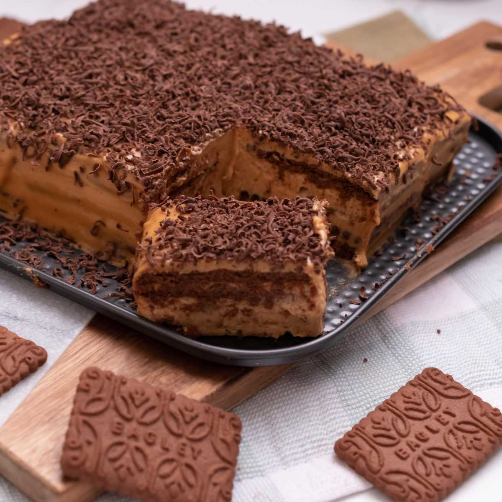

Chocotorta

Description
This classic chocotorta Argentina cake is unbelievably easy to make. A no-bake, dulce de leche layered cake, this dessert is a guaranteed success.
Ingredients
- 7 oz Dulce de Leche
- 5.3 oz Cream Cheese remove from fridge and allow it to soften
- 2 tbsp Creme fraiche or sour cream optional
- 8 oz Chocolate Cookies depending on the size of your dish
- 1 cup coffee freshly brewed
- 1 oz Valrhona dark chocolate for garnishing
- Parchment paper optional
Instructions
- In a large bowl, using a hand mixer, combine the dulce de leche and cream cheese and beat until fluffy. Add creme fraiche or sour cream and continue mixing. It should be a light caramel color with no lumps. Taste to achieve the ratio you like. Reserve
- Brew a cup of black coffee and pour it in a shallow dish. This is for dipping the chocolate cookies to make them moist. Make sure not to dip them for too long or they will get soggy and crumble.
- Line your dessert baking dish with parchment and begin building the Argentina cake.
- Submerge each chocolate cookie one by one in the coffee and line them across the parchment paper in the dessert baking dish. You may need to break up a couple of cookies to get the right geometrical shape to cover the entire surface.
- Pour some of the dulce de leche mixture and spread evenly with a spatula. Arrange another layer of coffee-soaked cookies. And then, add another layer of the dulce de leche mixture.
- Continue adding layers of chocolate cookies dipped in coffee followed by more dulce de leche mixture.
- You should have at least four layers of cookies ending with a layer of dulce de leche.
- For garnishing, melt a few squares of high-quality dark chocolate and pour on top of the last layer of dulce de leche.
- After having made the recipe for the first time, we would now recommend delicately melting the chocolate. Instead of melting the chocolate over a stovetop, we recommend using the bain marie method for a smooth finish.
- Once you have spread it out evenly, grate a few dark chocolate squares and sprinkle over the Argentina cake.
- Cover with a plastic wrap and refrigerate for at least four hours. The longer the Argentina cake sits in the refrigerator, the better it gets.
Home